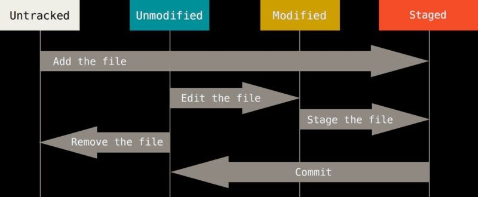

Como Trabalhar nos Repositórios
Normalmente, você obtém um repositório Git de duas maneiras:
Você pode pegar um diretório local que atualmente não está sob controle de versão e transformá-lo em um repositório Git, ou você pode clonar um repositório Git existente de outro lugar.
Em qualquer caso, você acaba com um repositório Git em sua máquina local, pronto para trabalhar.
Para começar o seu projeto com o git você executa o comando git init, isso cria um novo subdiretório denominado .git que contém todos os seus arquivos de repositório necessários - um esqueleto de repositório Git.
Se você deseja iniciar o controle de versão dos arquivos existentes, você provavelmente deve começar a rastrear esses arquivos e fazer um commit inicial.
Você pode fazer isso com alguns comandos que especificam os arquivos que deseja rastrear.
Após criado o seu arquivo ou projeto o comando seguinte é git add com isso seu arquivo passa a ser traqueado pelo git, seguidos por git commit "nome do arquivo" seu arquivo passa para o staged.
